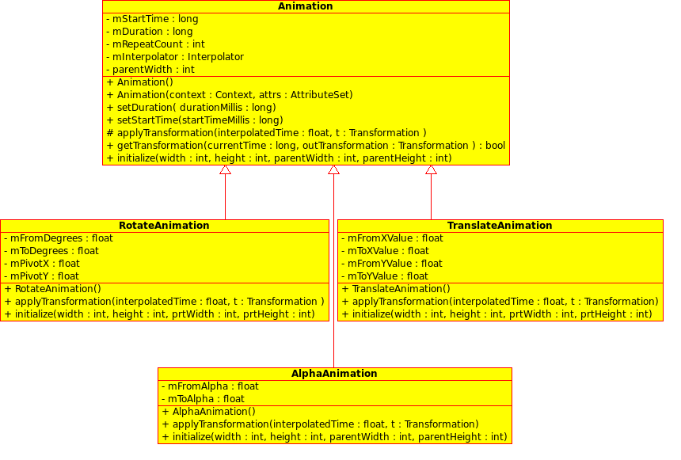
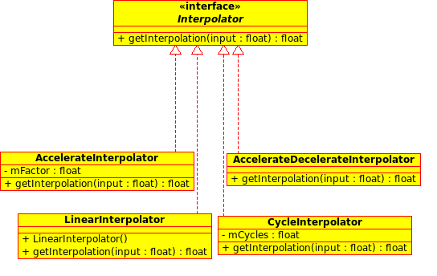
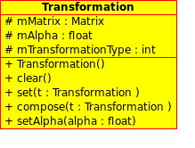
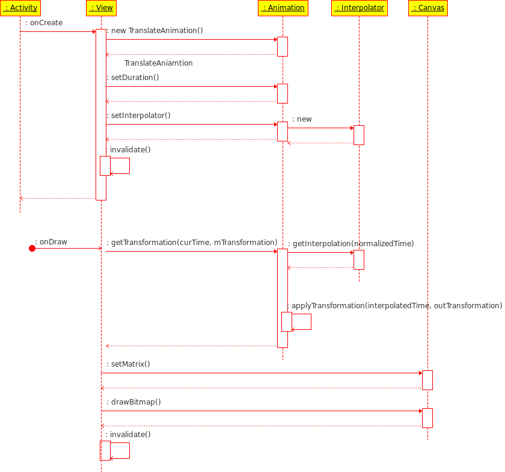

分析Android动画模块
Android 平台提供了两类动画，一类是Tween动画，即通过对场景里的对象不断做图像变换(平移、缩放、旋转)产生动画效果；第二类是Frame 动画，即顺序播放事先做好的图像，跟电影类似。本文分析了 Tween 动画的实现原理。 主要思路Tween 动画通过对 View 的内容完成一系列的图形变换 (包括平移、缩放、旋转、改变透明度)来实现动画效果。 具体来讲，预先定义一组指令，这些指令指定了图形变换的类型、触发时间、持续时间。这些指令可以是以XML文件方式定义，也可以是以源代码方式定义。程序沿着时间线执行这些指令就可以实现动画效果。 动画的进度使用Interpolator控制，android提供了几个Interpolator子类，实现了不同的速度曲线，如LinearInterpolator实现了匀速效果、 Accelerateinterpolator实现了加速效果、DecelerateInterpolator实现了减速效果等。还可以定义自己的Interpolator子类，实现抛物线、自由落体等物理效果。
动画的运行模式有两种： 1、独占模式，即程序主线程进入一个循环，根据动画指令不断刷新屏幕，直到动画结束； 2、中断模式，即有单独一个线程对时间计数，每隔一定的时间向主线程发通知，主线程接到通知后更新屏幕； 图形变换通过仿射矩阵实现。图形变换是图形学中的基本知识。简单来说就是，每种变换都是一次矩阵运算。在Android中，Canvas类中包含当前矩阵，当调用 Canvas。drawBitmap (bmp， x， y， Paint) 绘制时，android会先把bmp做一次矩阵运算，然后将运算的结果显示在Canvas上。这样，编程人员只需不断修改 Canvas 的矩阵并刷新屏幕，View里的对象就会不停的做图形变换，动画就形成了。 在 android 中提供了 Animation 、 Interpolator、Transformation 等类具体实现 Tween 动画，下面逐一分析。 Animation 类及其子类Animation 类及其子类是动画的核心模块，它实现了各种动画效果，如平移、缩放、旋转、改变透明度等。 Tween 动画的每一桢都根据 Interpolator 对 view 的内容做一次图形变换，因此 Animation 的核心工作是做变换(transformation)。 Aniamtion是基类，他记录了动画的通用属性和方法。主要的属性包括动画持续时间、重复次数、interpolator等。动画里最重要的方法是getTransformation(currentTime，outTransformation)，该方法根据当前间(currentTime)和interpolator，计算当前的变换，在outTransformation 中返回。 TranslateAnimation、RotateAnimation、AlphaAnimation等是Animation的子类，分别实现了平移、旋转、改变Alpha值等动画。 每个动画都重载了父类的applyTransformation方法，这个方法会被父类的getTransformation方法调用。另外每个动画还有个initialize 方法，完成初始化工作。 不同的动画具有不同的属性，如RotateAnimation的属性是起始角度、终止角度和旋转点坐标，TranslateAnimation的属性是起始位置和终止位置。AlphaAnimation 的属性是起始 alpha 值和终止 alpha 值。 Animation 类及其子类的类图如下所示： 
Android类及其子类 Interpolator 类及其子类Interpolator 定义了动画的变化速度，可以实现匀速、正加速、负加速、无规则变加速等； Interpolator 是基类，封装了所有 Interpolator 的共同方法，它只有一个方法，即 getInterpolation(float input)，该方法 maps a point on the timeline to a multiplier to beapplied to the transformations of an animation。 LinearInerpolator、AccelerateInterpolator，DecelerateInterpolator，AccelerateDecelerateInterpolator，CycleInterpolator是Interpolator的子类，分别实现了匀速、加速、减速、变速、循环等效果。 对于 LinearInterpolator ，变化率是个常数，即 f (x) = x.
public float getInterpolation(float input) {
return input；
}
对于 AccelerateInterpolator，开始变化很慢，然后逐渐变快，即 f(x) = x*x 或者 f(x) = pow(x， 2*mFactor)。
public float getInterpolation(float input) {
if (mFactor == 1.0f) {
return (float)(input * input)；
} else {
return (float)Math.pow(input， 2 * mFactor)；
}
}
对于 AccelerateDecelerateInterpolator，变化率开始和结束都很慢，但中间很快，即 f(x) = (cos ((x+1)*PI) / 2.0f) + 0.5f。
public float getInterpolation(float input) {
return (float)(Math.cos((input + 1) * Math.PI) / 2.0f) + 0.5f;
}
Interpolator 类及其子类的类图如下所示：

Interpolator 类及其子类 Transformation 类Transformation 记录了仿射矩阵 Matrix，动画每触发一次，会对原来的矩阵做一次运算， View 的 Bitmap 与这个矩阵相乘就可实现相应的操作(旋转、平移、缩放等)。 Transformation 类封装了矩阵和 alpha 值，它有两个重要的成员，一是mMatrix，二是mAlpha。 Transformation 类图如下所示： 
Transformation 类图 如何在 View 中实现动画从逻辑上讲，实现动画需要如下几步： view 创建动画对象，设置动画属性，调用 invalidate 刷新屏幕，启动动画； invalidate 方法触发了 onDraw 函数； 在 onDraw 函数中： 1.调用动画的 getTransformation 方法，得到当前时间点的矩阵 2.将该矩阵设置成 Canvas 的当前矩阵 3.调用 canvas 的 drawBitmap 方法，绘制屏幕。 判断 getTransformation 的返回值，若为真，调用 invalidate 方法，刷新屏幕进入下一桢；若为假，说明动画完成。 整个流程可用一个序列图表示： 
Tween 动画序列图 使用样例下面的代码是一个 view，系统创建 view 时会调用 onCreate 方法，该方法定义了一个TranslateAniamtion，指定了移动起点和终点，动画持续时间为 1s，最后调用 startAnimation 将该动画保存在View 的成员 mCurrentAnianmtion 中并启动动画。 注意，在 View 中需要定义成员变量 mCurrentAnimation 和 mTransformation ，分别记录当前的动画和变换。另外需要定义成员函数 startAnimation 启动动画。
class MyView extends View {
Animation mCurrentAnimation = null;
Transformation mTransformation = new Transformation;
private void setAnimation(Animation animation) {
mCurrentAnimation = animation;
if (animation != null) {
animation.reset();
}
}
public void startAnimation(Animation animation) {
animation.setStartTime(animation.START_ON_FIRST_FRAME);
setAnimation(animation);
invalidate();
}
public void onDraw(Canvas canvas) {
long curTime = SystemClock.uptimeMillis();
if (mCurrentAniamtion == null) {
canvas.drawBitmap(b, x, y, mPaint);
} else {
if (!mCurrentAnimation.isInitialized()) // initialize animation
mCurrentAnimation.initialize(w, h, pw, ph);
boolean more = mCurrentAnimation.getTransformation(curTime,
mTransformation);
if (more) {
Matrix m = canvas.getMatrix();
canvas.setMatrix(mTransformation.getMatrix());
canvas.drawBitmap(b, x, y, mPaint);
canvas.setMatrix(m);
this.invalidate();
} else {
mCurrentAnimation = null;
this.invalidate();
}
}
}
void onCreate() {
Animation anim = new TranslateAnimation(10, 20, 0, 0);
anim.setDuration(1000); // 1s
anim.setInterpolator(new AcceleratInterpolator(3.0f));
startAniamtion(anim);
}
}